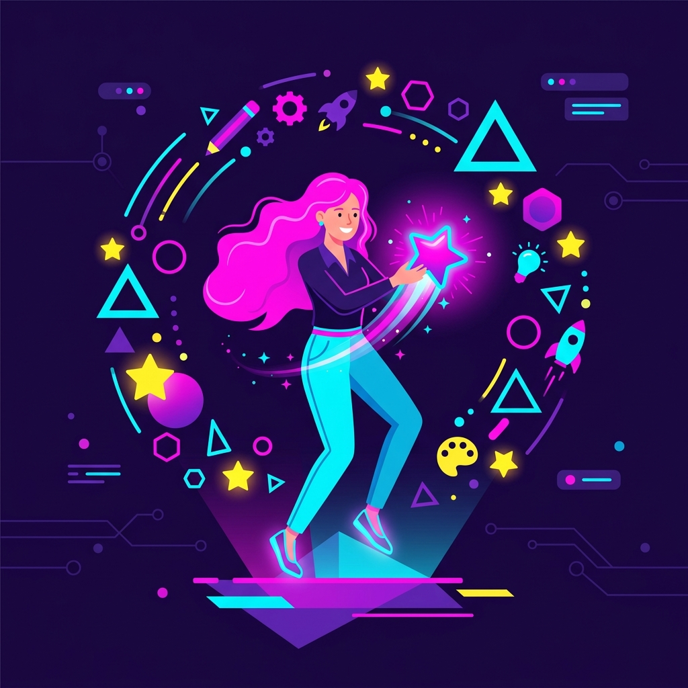

Bienvenue !
Nous respectons votre vie privée : aucun cookie ne sera déposé sur votre navigateur. Vous pouvez explorer notre site en toute tranquillité.
Nous respectons votre vie privée : aucun cookie ne sera déposé sur votre navigateur. Vous pouvez explorer notre site en toute tranquillité.
Laboratoire créatif et collaboratif

Ce mois de juin 2026, l’asbl digifactory, en partenariat avec le Namur Digital Institute, organisera un laboratoire créatif et collaboratif favorisant la co-construction de dispositifs numériques et narratifs, à la croisée de la recherche, de la création, de la médiation culturelle et scientifique, et de la pédagogie.
Pendant trois jours, des équipes pluridisciplinaires imagineront et construiront des prototypes de
dispositifs narratifs et numériques destinés à
qui favorise l’expérimentation rapide, l’intelligence collective et la
rencontre entre disciplines. Chaque groupe sera invité à développer et tester un dispositif
ludopédagogique innovant, visant à sensibiliser sur un sujet lié à la désinformation, le
tout durant trois jours inoubliables, riches en expériences et en rencontres visant à vivre
et faire vivre une expérience interactive au cœur même du processus de
conception.
Nous avons hâte de partager ce moment avec vous !
L'équipe
organisatrice.
L’idéodrome est une variation des désormais bien connus hackathon, mais conçu afin de s’insérer dans votre travail quotidien (en vous permettant d’aller et venir aux seins des équipes en présence). Durant 3 jours, un espace de créativité sera mis à votre disposition et des équipes à géométrie variable se lanceront un défi pas banal !
Produire un mini-jeu, une énigme, un contenu audiovisuel, une expérience numérique, etc. destiné à sensibiliser sur un sujet lié à la désinformation en moins de trois jours.
Les 1, 2 et 3 juin 2026
(de 9h à 16h)
Le Trakk
16 Avenue Reine Astrid
5000 Namur - Belgique
Chercheurs, étudiants, enseignants, artistes, développeurs, designers, médiateurs culturels, citoyens – l’évènement se veut un laboratoire vivant, ouvert et inclusif, où l’on explore ensemble de nouvelles formes de médiation numérique et narrative, à la croisée de la recherche, de la création, de la médiation scientifique et de l’éducation aux médias.
Contactez-nous via
digifactory.asbl@gmail.com